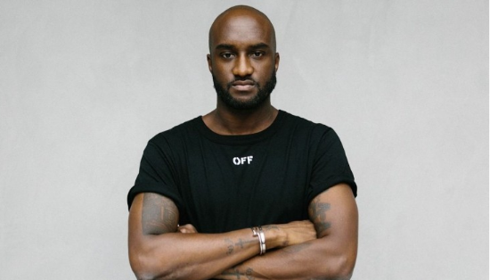
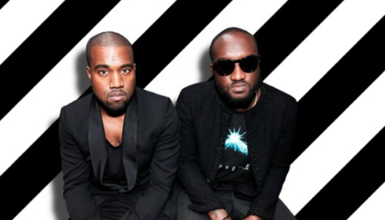
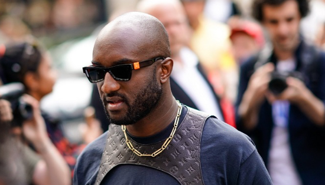
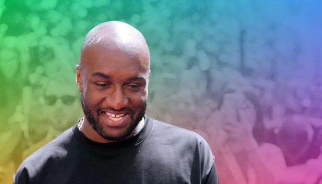

ABOUT

버질 아블로(Virgil Abloh)는 1980년 9월 30일에 미국 일리노이주 로키포트에서 태어났습니다.
그는 패션 디자이너, 예술가 및 음악 프로듀서로 잘 알려져 있습니다.
버질 아블로는 고등학교 시절에 거리 예술에 관심을 갖고 그 후 미국 일리노이 대학교에서
건축을 전공했습니다.

버질 아블로(Virgil Abloh)는 1980년 9월 30일에 미국 일리노이주 로키포트에서 태어났습니다.
그는 패션 디자이너, 예술가 및 음악 프로듀서로 잘 알려져 있습니다.
버질 아블로는 고등학교 시절에 거리 예술에 관심을 갖고 그 후 미국 일리노이 대학교에서
건축을 전공했습니다.

2018년에는 루이 비통(Louis Vuitton)의 남성복 예술 감독으로 임명되어 파리 패션
하우스의 역사상 처음으로 아프리카계 디자이너로서 주목받았습니다.
이 임명은 패션 산업에서 다양성과 통합을 높이는 중요한 순간으로 간주되었습니다.

버질 아블로는 또한 음악 분야에서도 활동을 펼치며, 다양한 아티스트와 협업했습니다.
그는 2021년 11월에 전해진 41세의 나이에 암으로 인해 세상을 떠났습니다.
그의 죽음은 패션 및 예술 커뮤니티에서 큰 충격을 일으켰으며,
그의 영향력과 창의성은 그의 삶을 통해 계속해서 기억될 것입니다.